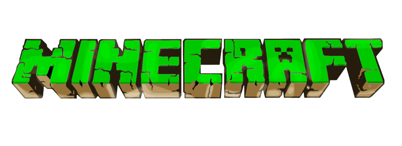
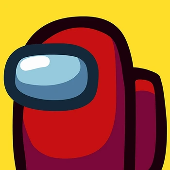
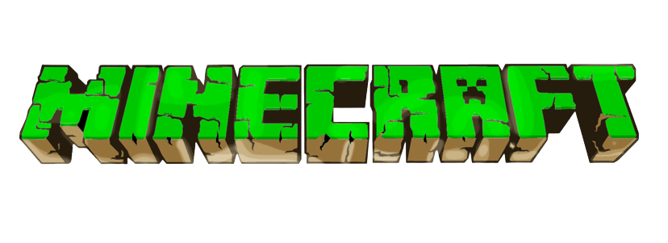
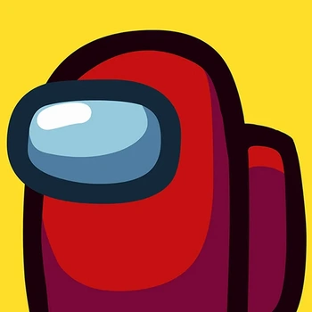
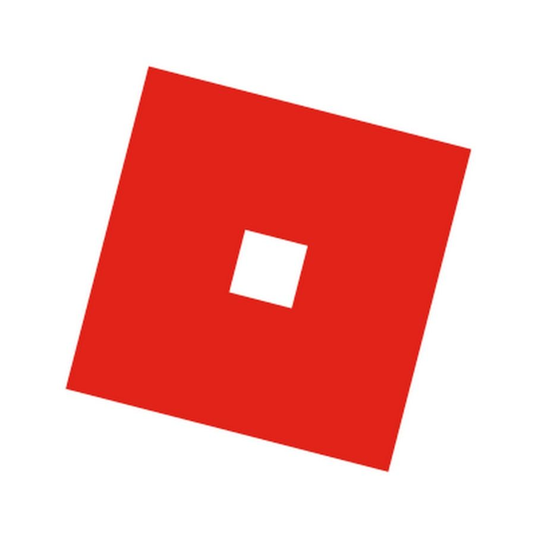
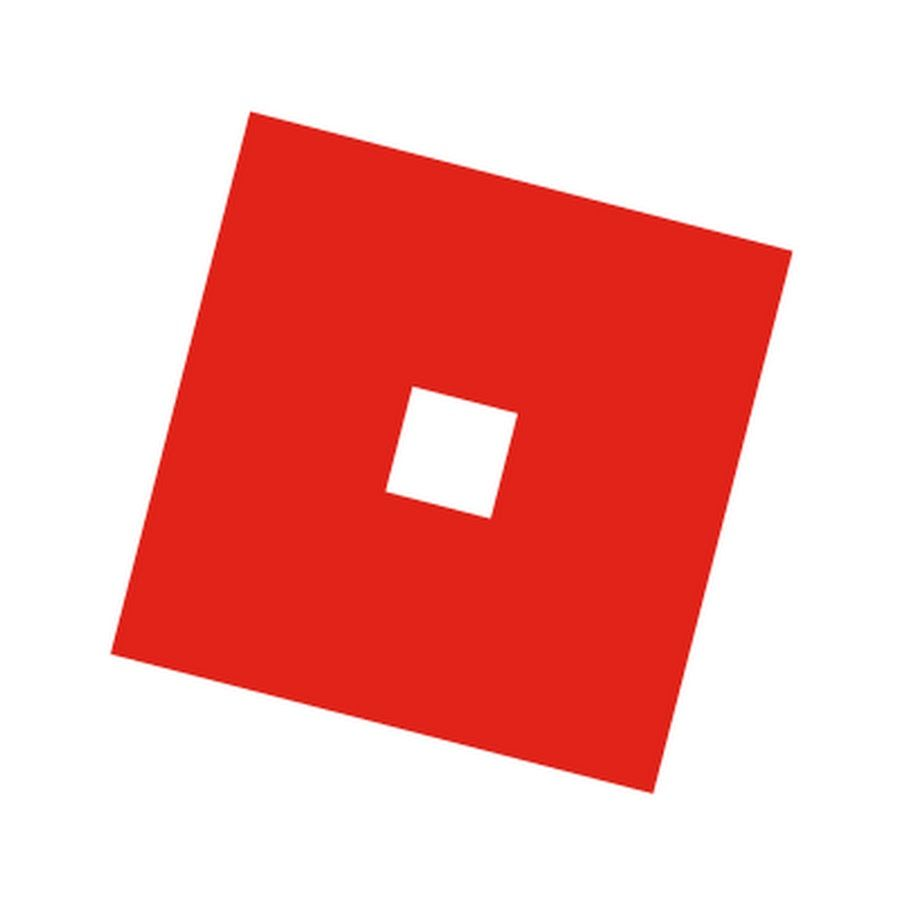

 


Resenha do Minecraft
Hoje vamos falar sobre Minecraft, um jogo mundialmente famoso, que começou em
10 de maio de 2009. Feito pela Mojang, sua última atualização foi em 23 de abril de
2019 por acaso foi muito boa, mas a Mojang anunciou que seria a última, com vários
mods muito bons, como o do Pokémon, Star Wars, Vingadores e etc. Também têm
novos itens como a besta, mas eu não gostei muito porque demora para carregar e
atirar e também. A outra nova arma é o tridente, eu gostei um pouco, vai bem longe
e mata rápido. Você pode encantar o tridente que você joga e volta para suas mãos.
Já o outro, se estiver em uma tempestade e você jogar em um mob ou player, ele
toma um raio. Também tem o totem da eternidade que quando você morre ele te
renasce com 3 corações. A textura das paisagens e dos itens está muito bonita
também. Temos os modos online pvp, sky wars, bed wars e etc. A jogabiliddade é
boa, mas as vezes demora muito para virar a câmera e para colocar blocos é meio
difícil, pois você tem que ficar na beirada do bloco para colocar outros e as vezes
isso pode ser perigoso e você pode morrer em uma queda ou caindo no void (isso
conta como sky wars, the end e bed wars). Tirando isso é muito boa a jogabilidade.
Minha nota seria 9/10.
10 de maio de 2009. Feito pela Mojang, sua última atualização foi em 23 de abril de
2019 por acaso foi muito boa, mas a Mojang anunciou que seria a última, com vários
mods muito bons, como o do Pokémon, Star Wars, Vingadores e etc. Também têm
novos itens como a besta, mas eu não gostei muito porque demora para carregar e
atirar e também. A outra nova arma é o tridente, eu gostei um pouco, vai bem longe
e mata rápido. Você pode encantar o tridente que você joga e volta para suas mãos.
Já o outro, se estiver em uma tempestade e você jogar em um mob ou player, ele
toma um raio. Também tem o totem da eternidade que quando você morre ele te
renasce com 3 corações. A textura das paisagens e dos itens está muito bonita
também. Temos os modos online pvp, sky wars, bed wars e etc. A jogabiliddade é
boa, mas as vezes demora muito para virar a câmera e para colocar blocos é meio
difícil, pois você tem que ficar na beirada do bloco para colocar outros e as vezes
isso pode ser perigoso e você pode morrer em uma queda ou caindo no void (isso
conta como sky wars, the end e bed wars). Tirando isso é muito boa a jogabilidade.
Minha nota seria 9/10.
Among US
Slither.io
Roblox
Gashin Impact